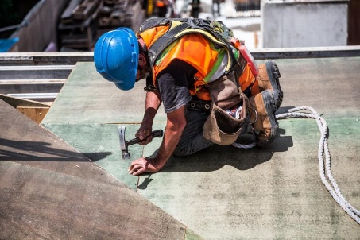
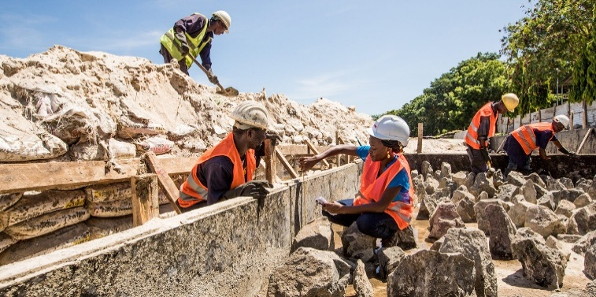
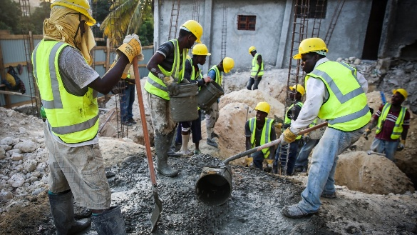
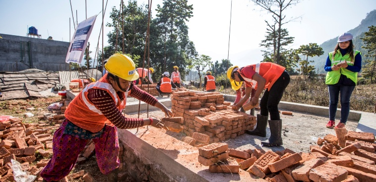
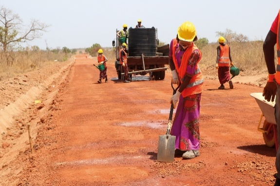
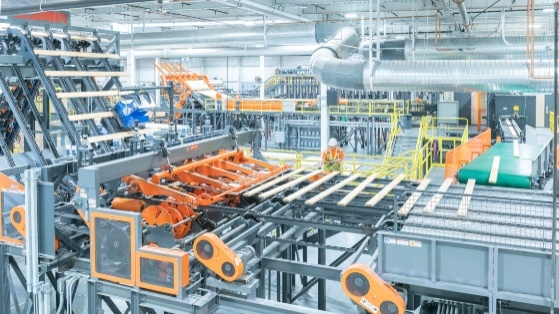
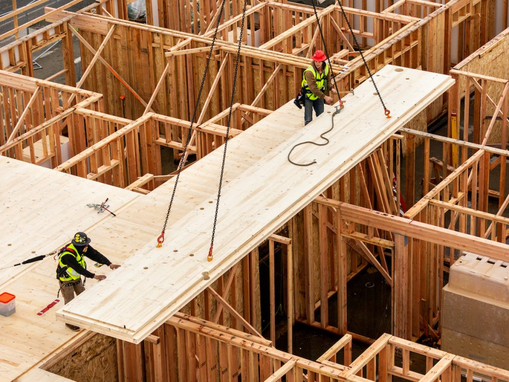

从现场作业到装配逻辑
面向制造与装配的设计将建造转化为面向生产的设计问题，在抵达现场之前同时确定模块、界面、工厂能力、物流与装配顺序。以下对比现场作业与装配逻辑，呈现从传统工地劳作走向工厂制造与现场装配的转变。









以香港医院作为应用场景
香港医院建设令其挑战变得非常具体：大型医院建设管线、老龄化需求、有限容量，以及复杂的医疗基础设施。
医院需要速度、品质、感染控制可靠性、可调整空间和高密度机电协调。这些正是可制造设计与装配策划最能发挥作用的场景。

医院 MiC 采用差距
目标采用率上升速度明显快于医院 MiC 的实际／预计采用率。
资料来源：Pan and Hon, 2020。
老龄化人口与医院容量
香港面临较高老龄化压力，但医院床位容量相对有限。
资料来源：Woo, 2023；Department of Health, 2023；OECD, 2023。
研究议程
我们尝试从设计理论与设计工程两方面作出贡献，推动面向制造与装配的设计的发展；研究方向涵盖城市模块化建造、人智协作设计与生成式设计优化。
城市模块化建造
本方向关注城市尺度与城市大数据背景下的模块化建造，把街区环境、存量建设条件与模块化运输等信息纳入设计与策划流程。
研究旨在助力高密度旧城区的建筑工业化应用，并为城市更新中的模块划分、物流装配与实施路径提供可操作的评估与决策支撑。
基金支持 HKU Seed Fund

主导研究者
梅亚岚

人智协作设计
我们关注人智竞合（human-AI coopetition），即人与 AI 如何在问题与方案边界模糊时协作、竞争与调适。
研究亦追踪这种互动如何重塑设计流程，并推动知识共创方式的转型。
基金支持 NSFC YSF(C)


主导研究者
张卓然李子昂

生成式设计优化
以医院建造为典型应用场景，研究运用生成式方法开展病房平面布局优化、施工工序优化与机电（MEP）系统布线优化。
流程涵盖工序编排、空间与进度约束下的施工组织，以及空调、通风、给水、消防喷淋与排水等系统的三维路径生成与协调，并输出可审阅的机电 BIM 与实施建议。
基金支持 申请审核中


主导研究者
Ajay AgrawalDaniela Méndez